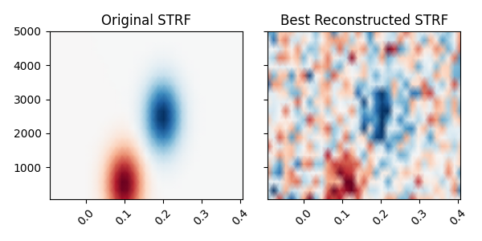
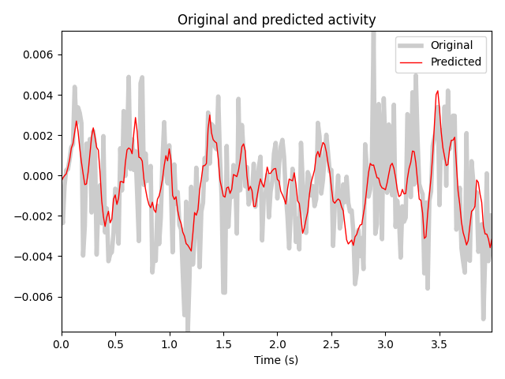

Note
Click here to download the full example code
Spectro-temporal receptive field (STRF) estimation on continuous data¶
This demonstrates how an encoding model can be fit with multiple continuous inputs. In this case, we simulate the model behind a spectro-temporal receptive field (or STRF). First, we create a linear filter that maps patterns in spectro-temporal space onto an output, representing neural activity. We fit a receptive field model that attempts to recover the original linear filter that was used to create this data.
References¶
Estimation of spectro-temporal and spatio-temporal receptive fields using modeling with continuous inputs is described in:
- 1
Theunissen, F. E. et al. Estimating spatio-temporal receptive fields of auditory and visual neurons from their responses to natural stimuli. Network 12, 289-316 (2001).
- 2
Willmore, B. & Smyth, D. Methods for first-order kernel estimation: simple-cell receptive fields from responses to natural scenes. Network 14, 553-77 (2003).
- 3(1,2)
Crosse, M. J., Di Liberto, G. M., Bednar, A. & Lalor, E. C. (2016). The Multivariate Temporal Response Function (mTRF) Toolbox: A MATLAB Toolbox for Relating Neural Signals to Continuous Stimuli. Frontiers in Human Neuroscience 10, 604. doi:10.3389/fnhum.2016.00604
- 4
Holdgraf, C. R. et al. Rapid tuning shifts in human auditory cortex enhance speech intelligibility. Nature Communications, 7, 13654 (2016). doi:10.1038/ncomms13654
# Authors: Chris Holdgraf <choldgraf@gmail.com>
# Eric Larson <larson.eric.d@gmail.com>
#
# License: BSD (3-clause)
import numpy as np
import matplotlib.pyplot as plt
import mne
from mne.decoding import ReceptiveField, TimeDelayingRidge
from scipy.stats import multivariate_normal
from scipy.io import loadmat
from sklearn.preprocessing import scale
rng = np.random.RandomState(1337) # To make this example reproducible
Load audio data¶
We’ll read in the audio data from 3 in order to simulate a response.
In addition, we’ll downsample the data along the time dimension in order to speed up computation. Note that depending on the input values, this may not be desired. For example if your input stimulus varies more quickly than 1/2 the sampling rate to which we are downsampling.
# Read in audio that's been recorded in epochs.
path_audio = mne.datasets.mtrf.data_path()
data = loadmat(path_audio + '/speech_data.mat')
audio = data['spectrogram'].T
sfreq = float(data['Fs'][0, 0])
n_decim = 2
audio = mne.filter.resample(audio, down=n_decim, npad='auto')
sfreq /= n_decim
Create a receptive field¶
We’ll simulate a linear receptive field for a theoretical neural signal. This defines how the signal will respond to power in this receptive field space.
n_freqs = 20
tmin, tmax = -0.1, 0.4
# To simulate the data we'll create explicit delays here
delays_samp = np.arange(np.round(tmin * sfreq),
np.round(tmax * sfreq) + 1).astype(int)
delays_sec = delays_samp / sfreq
freqs = np.linspace(50, 5000, n_freqs)
grid = np.array(np.meshgrid(delays_sec, freqs))
# We need data to be shaped as n_epochs, n_features, n_times, so swap axes here
grid = grid.swapaxes(0, -1).swapaxes(0, 1)
# Simulate a temporal receptive field with a Gabor filter
means_high = [.1, 500]
means_low = [.2, 2500]
cov = [[.001, 0], [0, 500000]]
gauss_high = multivariate_normal.pdf(grid, means_high, cov)
gauss_low = -1 * multivariate_normal.pdf(grid, means_low, cov)
weights = gauss_high + gauss_low # Combine to create the "true" STRF
kwargs = dict(vmax=np.abs(weights).max(), vmin=-np.abs(weights).max(),
cmap='RdBu_r', shading='gouraud')
fig, ax = plt.subplots()
ax.pcolormesh(delays_sec, freqs, weights, **kwargs)
ax.set(title='Simulated STRF', xlabel='Time Lags (s)', ylabel='Frequency (Hz)')
plt.setp(ax.get_xticklabels(), rotation=45)
plt.autoscale(tight=True)
mne.viz.tight_layout()
Simulate a neural response¶
Using this receptive field, we’ll create an artificial neural response to a stimulus.
To do this, we’ll create a time-delayed version of the receptive field, and then calculate the dot product between this and the stimulus. Note that this is effectively doing a convolution between the stimulus and the receptive field. See here for more information.
# Reshape audio to split into epochs, then make epochs the first dimension.
n_epochs, n_seconds = 16, 5
audio = audio[:, :int(n_seconds * sfreq * n_epochs)]
X = audio.reshape([n_freqs, n_epochs, -1]).swapaxes(0, 1)
n_times = X.shape[-1]
# Delay the spectrogram according to delays so it can be combined w/ the STRF
# Lags will now be in axis 1, then we reshape to vectorize
delays = np.arange(np.round(tmin * sfreq),
np.round(tmax * sfreq) + 1).astype(int)
# Iterate through indices and append
X_del = np.zeros((len(delays),) + X.shape)
for ii, ix_delay in enumerate(delays):
# These arrays will take/put particular indices in the data
take = [slice(None)] * X.ndim
put = [slice(None)] * X.ndim
if ix_delay > 0:
take[-1] = slice(None, -ix_delay)
put[-1] = slice(ix_delay, None)
elif ix_delay < 0:
take[-1] = slice(-ix_delay, None)
put[-1] = slice(None, ix_delay)
X_del[ii][tuple(put)] = X[tuple(take)]
# Now set the delayed axis to the 2nd dimension
X_del = np.rollaxis(X_del, 0, 3)
X_del = X_del.reshape([n_epochs, -1, n_times])
n_features = X_del.shape[1]
weights_sim = weights.ravel()
# Simulate a neural response to the sound, given this STRF
y = np.zeros((n_epochs, n_times))
for ii, iep in enumerate(X_del):
# Simulate this epoch and add random noise
noise_amp = .002
y[ii] = np.dot(weights_sim, iep) + noise_amp * rng.randn(n_times)
# Plot the first 2 trials of audio and the simulated electrode activity
X_plt = scale(np.hstack(X[:2]).T).T
y_plt = scale(np.hstack(y[:2]))
time = np.arange(X_plt.shape[-1]) / sfreq
_, (ax1, ax2) = plt.subplots(2, 1, figsize=(6, 6), sharex=True)
ax1.pcolormesh(time, freqs, X_plt, vmin=0, vmax=4, cmap='Reds')
ax1.set_title('Input auditory features')
ax1.set(ylim=[freqs.min(), freqs.max()], ylabel='Frequency (Hz)')
ax2.plot(time, y_plt)
ax2.set(xlim=[time.min(), time.max()], title='Simulated response',
xlabel='Time (s)', ylabel='Activity (a.u.)')
mne.viz.tight_layout()
Fit a model to recover this receptive field¶
Finally, we’ll use the mne.decoding.ReceptiveField class to recover
the linear receptive field of this signal. Note that properties of the
receptive field (e.g. smoothness) will depend on the autocorrelation in the
inputs and outputs.
# Create training and testing data
train, test = np.arange(n_epochs - 1), n_epochs - 1
X_train, X_test, y_train, y_test = X[train], X[test], y[train], y[test]
X_train, X_test, y_train, y_test = [np.rollaxis(ii, -1, 0) for ii in
(X_train, X_test, y_train, y_test)]
# Model the simulated data as a function of the spectrogram input
alphas = np.logspace(-3, 3, 7)
scores = np.zeros_like(alphas)
models = []
for ii, alpha in enumerate(alphas):
rf = ReceptiveField(tmin, tmax, sfreq, freqs, estimator=alpha)
rf.fit(X_train, y_train)
# Now make predictions about the model output, given input stimuli.
scores[ii] = rf.score(X_test, y_test)
models.append(rf)
times = rf.delays_ / float(rf.sfreq)
# Choose the model that performed best on the held out data
ix_best_alpha = np.argmax(scores)
best_mod = models[ix_best_alpha]
coefs = best_mod.coef_[0]
best_pred = best_mod.predict(X_test)[:, 0]
# Plot the original STRF, and the one that we recovered with modeling.
_, (ax1, ax2) = plt.subplots(1, 2, figsize=(6, 3), sharey=True, sharex=True)
ax1.pcolormesh(delays_sec, freqs, weights, **kwargs)
ax2.pcolormesh(times, rf.feature_names, coefs, **kwargs)
ax1.set_title('Original STRF')
ax2.set_title('Best Reconstructed STRF')
plt.setp([iax.get_xticklabels() for iax in [ax1, ax2]], rotation=45)
plt.autoscale(tight=True)
mne.viz.tight_layout()
# Plot the actual response and the predicted response on a held out stimulus
time_pred = np.arange(best_pred.shape[0]) / sfreq
fig, ax = plt.subplots()
ax.plot(time_pred, y_test, color='k', alpha=.2, lw=4)
ax.plot(time_pred, best_pred, color='r', lw=1)
ax.set(title='Original and predicted activity', xlabel='Time (s)')
ax.legend(['Original', 'Predicted'])
plt.autoscale(tight=True)
mne.viz.tight_layout()
- 
- 
Out:
Fitting 15 epochs, 20 channels
0%| | Sample : 0/3450 [00:00<?, ?it/s]
1%| | Sample : 18/3450 [00:00<00:03, 1123.99it/s]
2%|2 | Sample : 73/3450 [00:00<00:02, 1163.07it/s]
5%|4 | Sample : 156/3450 [00:00<00:02, 1209.88it/s]
7%|7 | Sample : 243/3450 [00:00<00:02, 1258.66it/s]
9%|9 | Sample : 324/3450 [00:00<00:02, 1307.74it/s]
12%|#2 | Sample : 415/3450 [00:00<00:02, 1359.92it/s]
15%|#4 | Sample : 508/3450 [00:00<00:02, 1414.04it/s]
17%|#7 | Sample : 598/3450 [00:00<00:01, 1469.01it/s]
20%|## | Sample : 696/3450 [00:00<00:01, 1527.00it/s]
23%|##2 | Sample : 789/3450 [00:00<00:01, 1585.37it/s]
26%|##5 | Sample : 886/3450 [00:00<00:01, 1645.96it/s]
28%|##8 | Sample : 983/3450 [00:00<00:01, 1707.95it/s]
31%|###1 | Sample : 1078/3450 [00:00<00:01, 1770.89it/s]
34%|###4 | Sample : 1175/3450 [00:00<00:01, 1835.57it/s]
37%|###6 | Sample : 1264/3450 [00:00<00:01, 1899.10it/s]
39%|###9 | Sample : 1358/3450 [00:00<00:01, 1965.59it/s]
42%|####2 | Sample : 1454/3450 [00:00<00:00, 2033.78it/s]
45%|####4 | Sample : 1538/3450 [00:00<00:00, 2097.51it/s]
47%|####6 | Sample : 1617/3450 [00:00<00:00, 2159.32it/s]
50%|####9 | Sample : 1711/3450 [00:00<00:00, 2229.71it/s]
52%|#####2 | Sample : 1807/3450 [00:00<00:00, 2302.03it/s]
55%|#####5 | Sample : 1903/3450 [00:00<00:00, 2375.02it/s]
58%|#####7 | Sample : 1997/3450 [00:00<00:00, 2447.47it/s]
61%|###### | Sample : 2096/3450 [00:00<00:00, 2523.35it/s]
63%|######3 | Sample : 2190/3450 [00:00<00:00, 2597.00it/s]
66%|######6 | Sample : 2289/3450 [00:00<00:00, 2674.10it/s]
69%|######9 | Sample : 2384/3450 [00:00<00:00, 2749.55it/s]
72%|#######1 | Sample : 2480/3450 [00:00<00:00, 2825.53it/s]
75%|#######4 | Sample : 2579/3450 [00:00<00:00, 2903.75it/s]
78%|#######7 | Sample : 2674/3450 [00:00<00:00, 2979.40it/s]
80%|######## | Sample : 2774/3450 [00:00<00:00, 3059.19it/s]
83%|########3 | Sample : 2867/3450 [00:00<00:00, 3133.23it/s]
86%|########5 | Sample : 2964/3450 [00:00<00:00, 3210.80it/s]
89%|########8 | Sample : 3060/3450 [00:00<00:00, 3287.08it/s]
91%|#########1| Sample : 3156/3450 [00:00<00:00, 3362.62it/s]
94%|#########4| Sample : 3255/3450 [00:00<00:00, 3440.44it/s]
97%|#########7| Sample : 3350/3450 [00:00<00:00, 3514.18it/s]
100%|##########| Sample : 3450/3450 [00:00<00:00, 5643.30it/s]
Fitting 15 epochs, 20 channels
0%| | Sample : 0/3450 [00:00<?, ?it/s]
2%|2 | Sample : 80/3450 [00:00<00:00, 4992.70it/s]
5%|4 | Sample : 163/3450 [00:00<00:00, 4999.76it/s]
7%|7 | Sample : 255/3450 [00:00<00:00, 5030.73it/s]
10%|# | Sample : 348/3450 [00:00<00:00, 5063.99it/s]
13%|#2 | Sample : 445/3450 [00:00<00:00, 5104.47it/s]
16%|#5 | Sample : 542/3450 [00:00<00:00, 5143.59it/s]
18%|#8 | Sample : 638/3450 [00:00<00:00, 5179.60it/s]
21%|##1 | Sample : 736/3450 [00:00<00:00, 5217.86it/s]
24%|##4 | Sample : 832/3450 [00:00<00:00, 5250.34it/s]
27%|##7 | Sample : 933/3450 [00:00<00:00, 5292.65it/s]
30%|##9 | Sample : 1028/3450 [00:00<00:00, 5320.38it/s]
33%|###2 | Sample : 1126/3450 [00:00<00:00, 5353.88it/s]
35%|###5 | Sample : 1224/3450 [00:00<00:00, 5385.38it/s]
38%|###8 | Sample : 1320/3450 [00:00<00:00, 5411.94it/s]
41%|####1 | Sample : 1418/3450 [00:00<00:00, 5442.64it/s]
44%|####3 | Sample : 1513/3450 [00:00<00:00, 5464.45it/s]
47%|####6 | Sample : 1613/3450 [00:00<00:00, 5498.00it/s]
50%|####9 | Sample : 1708/3450 [00:00<00:00, 5516.41it/s]
52%|#####2 | Sample : 1806/3450 [00:00<00:00, 5542.45it/s]
55%|#####5 | Sample : 1905/3450 [00:00<00:00, 5570.88it/s]
58%|#####7 | Sample : 2000/3450 [00:00<00:00, 5587.62it/s]
61%|###### | Sample : 2101/3450 [00:00<00:00, 5618.81it/s]
64%|######3 | Sample : 2195/3450 [00:00<00:00, 5630.99it/s]
67%|######6 | Sample : 2296/3450 [00:00<00:00, 5660.97it/s]
69%|######9 | Sample : 2391/3450 [00:00<00:00, 5672.65it/s]
72%|#######2 | Sample : 2490/3450 [00:00<00:00, 5693.77it/s]
75%|#######4 | Sample : 2585/3450 [00:00<00:00, 5699.73it/s]
76%|#######6 | Sample : 2636/3450 [00:00<00:00, 5477.48it/s]
78%|#######7 | Sample : 2689/3450 [00:00<00:00, 5303.64it/s]
80%|#######9 | Sample : 2744/3450 [00:00<00:00, 5158.65it/s]
81%|########1 | Sample : 2797/3450 [00:00<00:00, 5016.69it/s]
83%|########2 | Sample : 2857/3450 [00:00<00:00, 4929.75it/s]
86%|########5 | Sample : 2953/3450 [00:00<00:00, 4972.81it/s]
88%|########8 | Sample : 3051/3450 [00:00<00:00, 5018.19it/s]
91%|#########1| Sample : 3145/3450 [00:00<00:00, 5053.36it/s]
94%|#########4| Sample : 3244/3450 [00:00<00:00, 5099.48it/s]
97%|#########6| Sample : 3338/3450 [00:00<00:00, 5131.89it/s]
100%|#########9| Sample : 3435/3450 [00:00<00:00, 5170.51it/s]
100%|##########| Sample : 3450/3450 [00:00<00:00, 5614.82it/s]
Fitting 15 epochs, 20 channels
0%| | Sample : 0/3450 [00:00<?, ?it/s]
3%|2 | Sample : 92/3450 [00:00<00:00, 5736.65it/s]
5%|5 | Sample : 188/3450 [00:00<00:00, 5747.13it/s]
8%|8 | Sample : 284/3450 [00:00<00:00, 5757.88it/s]
11%|# | Sample : 379/3450 [00:00<00:00, 5765.28it/s]
14%|#3 | Sample : 478/3450 [00:00<00:00, 5783.03it/s]
17%|#6 | Sample : 573/3450 [00:00<00:00, 5789.63it/s]
19%|#9 | Sample : 668/3450 [00:00<00:00, 5794.61it/s]
22%|##2 | Sample : 764/3450 [00:00<00:00, 5803.23it/s]
25%|##4 | Sample : 860/3450 [00:00<00:00, 5810.90it/s]
28%|##7 | Sample : 959/3450 [00:00<00:00, 5828.25it/s]
31%|### | Sample : 1055/3450 [00:00<00:00, 5833.68it/s]
33%|###3 | Sample : 1155/3450 [00:00<00:00, 5851.98it/s]
36%|###6 | Sample : 1249/3450 [00:00<00:00, 5850.22it/s]
39%|###9 | Sample : 1346/3450 [00:00<00:00, 5858.96it/s]
42%|####1 | Sample : 1441/3450 [00:00<00:00, 5862.52it/s]
45%|####4 | Sample : 1537/3450 [00:00<00:00, 5868.34it/s]
47%|####7 | Sample : 1636/3450 [00:00<00:00, 5882.13it/s]
50%|##### | Sample : 1730/3450 [00:00<00:00, 5880.72it/s]
53%|#####3 | Sample : 1829/3450 [00:00<00:00, 5893.07it/s]
56%|#####5 | Sample : 1925/3450 [00:00<00:00, 5895.58it/s]
59%|#####8 | Sample : 2021/3450 [00:00<00:00, 5900.16it/s]
61%|######1 | Sample : 2119/3450 [00:00<00:00, 5909.25it/s]
64%|######4 | Sample : 2215/3450 [00:00<00:00, 5910.81it/s]
67%|######7 | Sample : 2315/3450 [00:00<00:00, 5926.02it/s]
70%|######9 | Sample : 2410/3450 [00:00<00:00, 5924.28it/s]
73%|#######2 | Sample : 2506/3450 [00:00<00:00, 5926.93it/s]
75%|#######5 | Sample : 2603/3450 [00:00<00:00, 5932.39it/s]
78%|#######8 | Sample : 2699/3450 [00:00<00:00, 5933.52it/s]
81%|######## | Sample : 2793/3450 [00:00<00:00, 5927.64it/s]
84%|########3 | Sample : 2888/3450 [00:00<00:00, 5925.82it/s]
87%|########6 | Sample : 2989/3450 [00:00<00:00, 5942.93it/s]
89%|########9 | Sample : 3077/3450 [00:00<00:00, 5917.75it/s]
92%|#########1| Sample : 3173/3450 [00:00<00:00, 5921.19it/s]
95%|#########4| Sample : 3272/3450 [00:00<00:00, 5931.63it/s]
98%|#########7| Sample : 3364/3450 [00:00<00:00, 5919.98it/s]
100%|##########| Sample : 3450/3450 [00:00<00:00, 5971.82it/s]
Fitting 15 epochs, 20 channels
0%| | Sample : 0/3450 [00:00<?, ?it/s]
2%|1 | Sample : 64/3450 [00:00<00:00, 3963.96it/s]
4%|3 | Sample : 121/3450 [00:00<00:00, 3939.03it/s]
5%|5 | Sample : 180/3450 [00:00<00:00, 3923.61it/s]
7%|7 | Sample : 242/3450 [00:00<00:00, 3918.78it/s]
9%|8 | Sample : 309/3450 [00:00<00:00, 3931.11it/s]
12%|#1 | Sample : 403/3450 [00:00<00:00, 3997.17it/s]
15%|#4 | Sample : 502/3450 [00:00<00:00, 4068.23it/s]
17%|#7 | Sample : 595/3450 [00:00<00:00, 4129.97it/s]
20%|## | Sample : 695/3450 [00:00<00:00, 4200.06it/s]
23%|##2 | Sample : 788/3450 [00:00<00:00, 4258.30it/s]
26%|##5 | Sample : 883/3450 [00:00<00:00, 4319.27it/s]
28%|##8 | Sample : 979/3450 [00:00<00:00, 4380.23it/s]
31%|###1 | Sample : 1070/3450 [00:00<00:00, 4430.82it/s]
34%|###3 | Sample : 1167/3450 [00:00<00:00, 4489.57it/s]
36%|###6 | Sample : 1257/3450 [00:00<00:00, 4534.77it/s]
39%|###9 | Sample : 1351/3450 [00:00<00:00, 4585.28it/s]
42%|####1 | Sample : 1444/3450 [00:00<00:00, 4633.24it/s]
44%|####4 | Sample : 1535/3450 [00:00<00:00, 4674.73it/s]
47%|####7 | Sample : 1629/3450 [00:00<00:00, 4721.78it/s]
50%|####9 | Sample : 1716/3450 [00:00<00:00, 4749.49it/s]
52%|#####2 | Sample : 1807/3450 [00:00<00:00, 4788.69it/s]
55%|#####5 | Sample : 1901/3450 [00:00<00:00, 4831.40it/s]
58%|#####7 | Sample : 1992/3450 [00:00<00:00, 4866.29it/s]
61%|###### | Sample : 2092/3450 [00:00<00:00, 4919.17it/s]
63%|######3 | Sample : 2186/3450 [00:00<00:00, 4957.61it/s]
66%|######6 | Sample : 2284/3450 [00:00<00:00, 5003.16it/s]
69%|######8 | Sample : 2380/3450 [00:00<00:00, 5043.84it/s]
72%|#######1 | Sample : 2474/3450 [00:00<00:00, 5079.50it/s]
75%|#######4 | Sample : 2573/3450 [00:00<00:00, 5123.25it/s]
77%|#######7 | Sample : 2668/3450 [00:00<00:00, 5156.54it/s]
80%|######## | Sample : 2768/3450 [00:00<00:00, 5201.32it/s]
83%|########2 | Sample : 2862/3450 [00:00<00:00, 5229.09it/s]
86%|########5 | Sample : 2958/3450 [00:00<00:00, 5260.24it/s]
89%|########8 | Sample : 3055/3450 [00:00<00:00, 5293.75it/s]
91%|#########1| Sample : 3149/3450 [00:00<00:00, 5317.89it/s]
94%|#########4| Sample : 3248/3450 [00:00<00:00, 5353.56it/s]
97%|#########6| Sample : 3342/3450 [00:00<00:00, 5375.09it/s]
100%|#########9| Sample : 3440/3450 [00:00<00:00, 5408.09it/s]
100%|##########| Sample : 3450/3450 [00:00<00:00, 5618.95it/s]
Fitting 15 epochs, 20 channels
0%| | Sample : 0/3450 [00:00<?, ?it/s]
3%|2 | Sample : 92/3450 [00:00<00:00, 5696.68it/s]
5%|5 | Sample : 187/3450 [00:00<00:00, 5708.04it/s]
8%|8 | Sample : 283/3450 [00:00<00:00, 5720.54it/s]
11%|# | Sample : 376/3450 [00:00<00:00, 5723.06it/s]
14%|#3 | Sample : 472/3450 [00:00<00:00, 5735.49it/s]
16%|#6 | Sample : 560/3450 [00:00<00:00, 5721.08it/s]
19%|#9 | Sample : 656/3450 [00:00<00:00, 5734.26it/s]
22%|##1 | Sample : 745/3450 [00:00<00:00, 5723.09it/s]
24%|##4 | Sample : 835/3450 [00:00<00:00, 5716.12it/s]
27%|##7 | Sample : 933/3450 [00:00<00:00, 5734.61it/s]
30%|##9 | Sample : 1026/3450 [00:00<00:00, 5738.13it/s]
32%|###2 | Sample : 1121/3450 [00:00<00:00, 5746.75it/s]
35%|###5 | Sample : 1216/3450 [00:00<00:00, 5754.01it/s]
38%|###7 | Sample : 1310/3450 [00:00<00:00, 5758.60it/s]
41%|#### | Sample : 1408/3450 [00:00<00:00, 5774.90it/s]
43%|####3 | Sample : 1499/3450 [00:00<00:00, 5769.13it/s]
46%|####6 | Sample : 1595/3450 [00:00<00:00, 5779.78it/s]
49%|####9 | Sample : 1691/3450 [00:00<00:00, 5787.41it/s]
52%|#####1 | Sample : 1778/3450 [00:00<00:00, 5767.06it/s]
54%|#####4 | Sample : 1875/3450 [00:00<00:00, 5781.05it/s]
57%|#####7 | Sample : 1967/3450 [00:00<00:00, 5777.36it/s]
60%|#####9 | Sample : 2065/3450 [00:00<00:00, 5793.44it/s]
63%|######2 | Sample : 2157/3450 [00:00<00:00, 5790.97it/s]
65%|######5 | Sample : 2252/3450 [00:00<00:00, 5795.46it/s]
68%|######8 | Sample : 2348/3450 [00:00<00:00, 5803.57it/s]
71%|####### | Sample : 2439/3450 [00:00<00:00, 5796.98it/s]
74%|#######3 | Sample : 2538/3450 [00:00<00:00, 5812.64it/s]
76%|#######6 | Sample : 2631/3450 [00:00<00:00, 5809.71it/s]
79%|#######9 | Sample : 2727/3450 [00:00<00:00, 5816.71it/s]
82%|########1 | Sample : 2823/3450 [00:00<00:00, 5825.22it/s]
85%|########4 | Sample : 2917/3450 [00:00<00:00, 5825.13it/s]
87%|########7 | Sample : 3016/3450 [00:00<00:00, 5839.32it/s]
90%|######### | Sample : 3109/3450 [00:00<00:00, 5837.07it/s]
93%|#########2| Sample : 3206/3450 [00:00<00:00, 5847.92it/s]
96%|#########5| Sample : 3301/3450 [00:00<00:00, 5851.60it/s]
98%|#########8| Sample : 3395/3450 [00:00<00:00, 5851.13it/s]
100%|##########| Sample : 3450/3450 [00:00<00:00, 5869.71it/s]
Fitting 15 epochs, 20 channels
0%| | Sample : 0/3450 [00:00<?, ?it/s]
3%|2 | Sample : 92/3450 [00:00<00:00, 5743.74it/s]
5%|5 | Sample : 188/3450 [00:00<00:00, 5755.89it/s]
8%|8 | Sample : 285/3450 [00:00<00:00, 5770.07it/s]
11%|# | Sample : 379/3450 [00:00<00:00, 5774.32it/s]
14%|#3 | Sample : 479/3450 [00:00<00:00, 5793.72it/s]
17%|#6 | Sample : 573/3450 [00:00<00:00, 5796.75it/s]
19%|#9 | Sample : 669/3450 [00:00<00:00, 5806.51it/s]
22%|##2 | Sample : 765/3450 [00:00<00:00, 5813.83it/s]
25%|##4 | Sample : 861/3450 [00:00<00:00, 5820.27it/s]
28%|##7 | Sample : 959/3450 [00:00<00:00, 5832.36it/s]
31%|### | Sample : 1054/3450 [00:00<00:00, 5835.94it/s]
33%|###3 | Sample : 1155/3450 [00:00<00:00, 5856.03it/s]
36%|###6 | Sample : 1248/3450 [00:00<00:00, 5853.40it/s]
39%|###8 | Sample : 1344/3450 [00:00<00:00, 5859.44it/s]
42%|####1 | Sample : 1442/3450 [00:00<00:00, 5871.61it/s]
45%|####4 | Sample : 1538/3450 [00:00<00:00, 5875.87it/s]
47%|####7 | Sample : 1638/3450 [00:00<00:00, 5891.65it/s]
50%|##### | Sample : 1732/3450 [00:00<00:00, 5890.36it/s]
53%|#####3 | Sample : 1832/3450 [00:00<00:00, 5906.51it/s]
56%|#####5 | Sample : 1928/3450 [00:00<00:00, 5908.02it/s]
59%|#####8 | Sample : 2024/3450 [00:00<00:00, 5911.47it/s]
62%|######1 | Sample : 2123/3450 [00:00<00:00, 5922.21it/s]
64%|######4 | Sample : 2218/3450 [00:00<00:00, 5922.75it/s]
67%|######7 | Sample : 2317/3450 [00:00<00:00, 5935.41it/s]
70%|######9 | Sample : 2412/3450 [00:00<00:00, 5932.62it/s]
73%|#######2 | Sample : 2509/3450 [00:00<00:00, 5937.46it/s]
76%|#######5 | Sample : 2605/3450 [00:00<00:00, 5940.44it/s]
78%|#######8 | Sample : 2701/3450 [00:00<00:00, 5942.40it/s]
81%|########1 | Sample : 2800/3450 [00:00<00:00, 5951.11it/s]
84%|########3 | Sample : 2894/3450 [00:00<00:00, 5945.92it/s]
87%|########6 | Sample : 2993/3450 [00:00<00:00, 5956.09it/s]
89%|########9 | Sample : 3087/3450 [00:00<00:00, 5949.07it/s]
92%|#########2| Sample : 3183/3450 [00:00<00:00, 5950.06it/s]
95%|#########5| Sample : 3282/3450 [00:00<00:00, 5960.11it/s]
98%|#########7| Sample : 3378/3450 [00:00<00:00, 5959.74it/s]
100%|##########| Sample : 3450/3450 [00:00<00:00, 6009.55it/s]
Fitting 15 epochs, 20 channels
0%| | Sample : 0/3450 [00:00<?, ?it/s]
3%|2 | Sample : 92/3450 [00:00<00:00, 5706.37it/s]
5%|5 | Sample : 189/3450 [00:00<00:00, 5722.46it/s]
8%|8 | Sample : 287/3450 [00:00<00:00, 5739.90it/s]
11%|#1 | Sample : 384/3450 [00:00<00:00, 5752.97it/s]
14%|#4 | Sample : 484/3450 [00:00<00:00, 5774.90it/s]
17%|#6 | Sample : 579/3450 [00:00<00:00, 5782.25it/s]
20%|#9 | Sample : 679/3450 [00:00<00:00, 5803.05it/s]
22%|##2 | Sample : 776/3450 [00:00<00:00, 5812.59it/s]
25%|##5 | Sample : 870/3450 [00:00<00:00, 5813.86it/s]
28%|##7 | Sample : 964/3450 [00:00<00:00, 5814.98it/s]
31%|### | Sample : 1057/3450 [00:00<00:00, 5813.86it/s]
34%|###3 | Sample : 1157/3450 [00:00<00:00, 5831.43it/s]
36%|###6 | Sample : 1248/3450 [00:00<00:00, 5822.12it/s]
39%|###8 | Sample : 1343/3450 [00:00<00:00, 5825.11it/s]
42%|####1 | Sample : 1438/3450 [00:00<00:00, 5829.45it/s]
44%|####4 | Sample : 1532/3450 [00:00<00:00, 5831.46it/s]
47%|####7 | Sample : 1630/3450 [00:00<00:00, 5844.86it/s]
50%|####9 | Sample : 1724/3450 [00:00<00:00, 5845.53it/s]
53%|#####2 | Sample : 1820/3450 [00:00<00:00, 5852.87it/s]
56%|#####5 | Sample : 1915/3450 [00:00<00:00, 5853.92it/s]
58%|#####8 | Sample : 2010/3450 [00:00<00:00, 5856.07it/s]
61%|######1 | Sample : 2108/3450 [00:00<00:00, 5865.98it/s]
64%|######3 | Sample : 2203/3450 [00:00<00:00, 5868.44it/s]
67%|######6 | Sample : 2304/3450 [00:00<00:00, 5887.31it/s]
69%|######9 | Sample : 2397/3450 [00:00<00:00, 5882.95it/s]
72%|#######2 | Sample : 2493/3450 [00:00<00:00, 5888.42it/s]
75%|#######5 | Sample : 2591/3450 [00:00<00:00, 5899.18it/s]
78%|#######7 | Sample : 2686/3450 [00:00<00:00, 5898.16it/s]
81%|######## | Sample : 2785/3450 [00:00<00:00, 5911.71it/s]
83%|########3 | Sample : 2879/3450 [00:00<00:00, 5909.08it/s]
86%|########6 | Sample : 2978/3450 [00:00<00:00, 5920.38it/s]
89%|########9 | Sample : 3073/3450 [00:00<00:00, 5920.51it/s]
92%|#########1| Sample : 3169/3450 [00:00<00:00, 5923.84it/s]
95%|#########4| Sample : 3267/3450 [00:00<00:00, 5932.20it/s]
97%|#########7| Sample : 3362/3450 [00:00<00:00, 5930.86it/s]
100%|##########| Sample : 3450/3450 [00:00<00:00, 5981.42it/s]
Visualize the effects of regularization¶
Above we fit a mne.decoding.ReceptiveField model for one of many
values for the ridge regularization parameter. Here we will plot the model
score as well as the model coefficients for each value, in order to
visualize how coefficients change with different levels of regularization.
These issues as well as the STRF pipeline are described in detail
in 1, 2, and 4.
# Plot model score for each ridge parameter
fig = plt.figure(figsize=(10, 4))
ax = plt.subplot2grid([2, len(alphas)], [1, 0], 1, len(alphas))
ax.plot(np.arange(len(alphas)), scores, marker='o', color='r')
ax.annotate('Best parameter', (ix_best_alpha, scores[ix_best_alpha]),
(ix_best_alpha, scores[ix_best_alpha] - .1),
arrowprops={'arrowstyle': '->'})
plt.xticks(np.arange(len(alphas)), ["%.0e" % ii for ii in alphas])
ax.set(xlabel="Ridge regularization value", ylabel="Score ($R^2$)",
xlim=[-.4, len(alphas) - .6])
mne.viz.tight_layout()
# Plot the STRF of each ridge parameter
for ii, (rf, i_alpha) in enumerate(zip(models, alphas)):
ax = plt.subplot2grid([2, len(alphas)], [0, ii], 1, 1)
ax.pcolormesh(times, rf.feature_names, rf.coef_[0], **kwargs)
plt.xticks([], [])
plt.yticks([], [])
plt.autoscale(tight=True)
fig.suptitle('Model coefficients / scores for many ridge parameters', y=1)
mne.viz.tight_layout()
Using different regularization types¶
In addition to the standard ridge regularization, the
mne.decoding.TimeDelayingRidge class also exposes
Laplacian regularization
term as:
This imposes a smoothness constraint of nearby time samples and/or features. Quoting 3:
Tikhonov [identity] regularization (Equation 5) reduces overfitting by smoothing the TRF estimate in a way that is insensitive to the amplitude of the signal of interest. However, the Laplacian approach (Equation 6) reduces off-sample error whilst preserving signal amplitude (Lalor et al., 2006). As a result, this approach usually leads to an improved estimate of the system’s response (as indexed by MSE) compared to Tikhonov regularization.
scores_lap = np.zeros_like(alphas)
models_lap = []
for ii, alpha in enumerate(alphas):
estimator = TimeDelayingRidge(tmin, tmax, sfreq, reg_type='laplacian',
alpha=alpha)
rf = ReceptiveField(tmin, tmax, sfreq, freqs, estimator=estimator)
rf.fit(X_train, y_train)
# Now make predictions about the model output, given input stimuli.
scores_lap[ii] = rf.score(X_test, y_test)
models_lap.append(rf)
ix_best_alpha_lap = np.argmax(scores_lap)
Out:
Fitting 15 epochs, 20 channels
0%| | Sample : 0/3450 [00:00<?, ?it/s]
0%| | Sample : 16/3450 [00:00<00:03, 966.46it/s]
2%|2 | Sample : 86/3450 [00:00<00:03, 1005.52it/s]
5%|4 | Sample : 162/3450 [00:00<00:03, 1046.76it/s]
7%|7 | Sample : 257/3450 [00:00<00:02, 1091.67it/s]
10%|# | Sample : 351/3450 [00:00<00:02, 1137.96it/s]
13%|#3 | Sample : 449/3450 [00:00<00:02, 1186.16it/s]
16%|#5 | Sample : 538/3450 [00:00<00:02, 1234.72it/s]
18%|#8 | Sample : 631/3450 [00:00<00:02, 1285.33it/s]
21%|##1 | Sample : 729/3450 [00:00<00:02, 1338.10it/s]
24%|##3 | Sample : 825/3450 [00:00<00:01, 1392.08it/s]
27%|##6 | Sample : 924/3450 [00:00<00:01, 1448.09it/s]
29%|##9 | Sample : 1016/3450 [00:00<00:01, 1504.27it/s]
32%|###2 | Sample : 1111/3450 [00:00<00:01, 1562.59it/s]
35%|###5 | Sample : 1209/3450 [00:00<00:01, 1622.85it/s]
38%|###7 | Sample : 1306/3450 [00:00<00:01, 1684.35it/s]
41%|#### | Sample : 1404/3450 [00:00<00:01, 1747.63it/s]
43%|####3 | Sample : 1496/3450 [00:00<00:01, 1810.41it/s]
46%|####6 | Sample : 1595/3450 [00:00<00:00, 1876.65it/s]
49%|####9 | Sample : 1691/3450 [00:00<00:00, 1943.30it/s]
52%|#####1 | Sample : 1787/3450 [00:00<00:00, 2011.10it/s]
55%|#####4 | Sample : 1885/3450 [00:00<00:00, 2080.98it/s]
57%|#####7 | Sample : 1981/3450 [00:00<00:00, 2151.03it/s]
60%|###### | Sample : 2079/3450 [00:00<00:00, 2222.80it/s]
63%|######2 | Sample : 2173/3450 [00:00<00:00, 2293.79it/s]
66%|######5 | Sample : 2266/3450 [00:00<00:00, 2365.24it/s]
68%|######8 | Sample : 2363/3450 [00:00<00:00, 2439.54it/s]
71%|#######1 | Sample : 2457/3450 [00:00<00:00, 2512.79it/s]
74%|#######3 | Sample : 2550/3450 [00:00<00:00, 2585.19it/s]
76%|#######6 | Sample : 2637/3450 [00:00<00:00, 2654.24it/s]
79%|#######9 | Sample : 2731/3450 [00:00<00:00, 2728.69it/s]
82%|########1 | Sample : 2824/3450 [00:00<00:00, 2802.50it/s]
85%|########4 | Sample : 2917/3450 [00:00<00:00, 2876.61it/s]
87%|########7 | Sample : 3016/3450 [00:00<00:00, 2954.98it/s]
90%|######### | Sample : 3105/3450 [00:00<00:00, 3025.60it/s]
93%|#########2| Sample : 3203/3450 [00:00<00:00, 3103.32it/s]
96%|#########5| Sample : 3299/3450 [00:00<00:00, 3179.95it/s]
98%|#########8| Sample : 3393/3450 [00:00<00:00, 3254.38it/s]
100%|##########| Sample : 3450/3450 [00:00<00:00, 5703.19it/s]
Fitting 15 epochs, 20 channels
0%| | Sample : 0/3450 [00:00<?, ?it/s]
3%|2 | Sample : 89/3450 [00:00<00:00, 5511.57it/s]
5%|5 | Sample : 184/3450 [00:00<00:00, 5528.61it/s]
8%|8 | Sample : 283/3450 [00:00<00:00, 5556.99it/s]
11%|# | Sample : 378/3450 [00:00<00:00, 5572.58it/s]
13%|#3 | Sample : 461/3450 [00:00<00:00, 5549.09it/s]
16%|#6 | Sample : 554/3450 [00:00<00:00, 5561.58it/s]
19%|#8 | Sample : 651/3450 [00:00<00:00, 5583.04it/s]
22%|##1 | Sample : 749/3450 [00:00<00:00, 5606.55it/s]
24%|##4 | Sample : 845/3450 [00:00<00:00, 5624.38it/s]
27%|##7 | Sample : 945/3450 [00:00<00:00, 5650.40it/s]
30%|### | Sample : 1037/3450 [00:00<00:00, 5654.33it/s]
33%|###2 | Sample : 1135/3450 [00:00<00:00, 5674.29it/s]
36%|###5 | Sample : 1232/3450 [00:00<00:00, 5691.40it/s]
39%|###8 | Sample : 1329/3450 [00:00<00:00, 5706.39it/s]
41%|####1 | Sample : 1428/3450 [00:00<00:00, 5727.34it/s]
44%|####4 | Sample : 1524/3450 [00:00<00:00, 5738.89it/s]
47%|####7 | Sample : 1624/3450 [00:00<00:00, 5760.53it/s]
50%|####9 | Sample : 1719/3450 [00:00<00:00, 5767.84it/s]
53%|#####2 | Sample : 1817/3450 [00:00<00:00, 5783.56it/s]
55%|#####5 | Sample : 1912/3450 [00:00<00:00, 5790.69it/s]
58%|#####8 | Sample : 2009/3450 [00:00<00:00, 5801.21it/s]
61%|######1 | Sample : 2108/3450 [00:00<00:00, 5817.76it/s]
64%|######3 | Sample : 2204/3450 [00:00<00:00, 5824.96it/s]
67%|######6 | Sample : 2305/3450 [00:00<00:00, 5845.58it/s]
70%|######9 | Sample : 2399/3450 [00:00<00:00, 5846.45it/s]
72%|#######2 | Sample : 2497/3450 [00:00<00:00, 5856.91it/s]
75%|#######5 | Sample : 2595/3450 [00:00<00:00, 5867.85it/s]
78%|#######8 | Sample : 2691/3450 [00:00<00:00, 5873.25it/s]
81%|######## | Sample : 2791/3450 [00:00<00:00, 5890.64it/s]
84%|########3 | Sample : 2885/3450 [00:00<00:00, 5887.96it/s]
87%|########6 | Sample : 2986/3450 [00:00<00:00, 5905.27it/s]
89%|########9 | Sample : 3080/3450 [00:00<00:00, 5903.52it/s]
92%|#########2| Sample : 3177/3450 [00:00<00:00, 5910.99it/s]
95%|#########4| Sample : 3275/3450 [00:00<00:00, 5920.86it/s]
98%|#########7| Sample : 3371/3450 [00:00<00:00, 5922.94it/s]
100%|##########| Sample : 3450/3450 [00:00<00:00, 5994.10it/s]
Fitting 15 epochs, 20 channels
0%| | Sample : 0/3450 [00:00<?, ?it/s]
3%|2 | Sample : 92/3450 [00:00<00:00, 5687.95it/s]
5%|5 | Sample : 189/3450 [00:00<00:00, 5703.72it/s]
8%|8 | Sample : 287/3450 [00:00<00:00, 5721.60it/s]
11%|#1 | Sample : 384/3450 [00:00<00:00, 5735.11it/s]
14%|#3 | Sample : 481/3450 [00:00<00:00, 5750.41it/s]
17%|#6 | Sample : 576/3450 [00:00<00:00, 5756.74it/s]
20%|#9 | Sample : 673/3450 [00:00<00:00, 5771.18it/s]
22%|##2 | Sample : 770/3450 [00:00<00:00, 5785.03it/s]
25%|##5 | Sample : 867/3450 [00:00<00:00, 5795.73it/s]
28%|##8 | Sample : 967/3450 [00:00<00:00, 5814.26it/s]
31%|### | Sample : 1063/3450 [00:00<00:00, 5820.90it/s]
34%|###3 | Sample : 1163/3450 [00:00<00:00, 5839.17it/s]
36%|###6 | Sample : 1258/3450 [00:00<00:00, 5841.50it/s]
39%|###9 | Sample : 1356/3450 [00:00<00:00, 5854.57it/s]
42%|####2 | Sample : 1453/3450 [00:00<00:00, 5864.43it/s]
45%|####4 | Sample : 1550/3450 [00:00<00:00, 5873.16it/s]
48%|####7 | Sample : 1650/3450 [00:00<00:00, 5889.05it/s]
51%|##### | Sample : 1746/3450 [00:00<00:00, 5892.70it/s]
54%|#####3 | Sample : 1847/3450 [00:00<00:00, 5911.75it/s]
56%|#####6 | Sample : 1943/3450 [00:00<00:00, 5913.16it/s]
59%|#####9 | Sample : 2041/3450 [00:00<00:00, 5922.66it/s]
62%|######2 | Sample : 2140/3450 [00:00<00:00, 5932.79it/s]
65%|######4 | Sample : 2237/3450 [00:00<00:00, 5937.79it/s]
68%|######7 | Sample : 2337/3450 [00:00<00:00, 5949.68it/s]
71%|####### | Sample : 2433/3450 [00:00<00:00, 5950.54it/s]
73%|#######3 | Sample : 2534/3450 [00:00<00:00, 5967.08it/s]
76%|#######6 | Sample : 2629/3450 [00:00<00:00, 5964.43it/s]
79%|#######9 | Sample : 2727/3450 [00:00<00:00, 5970.83it/s]
82%|########1 | Sample : 2825/3450 [00:00<00:00, 5978.23it/s]
85%|########4 | Sample : 2921/3450 [00:00<00:00, 5976.27it/s]
88%|########7 | Sample : 3021/3450 [00:00<00:00, 5986.63it/s]
90%|######### | Sample : 3117/3450 [00:00<00:00, 5985.10it/s]
93%|#########3| Sample : 3218/3450 [00:00<00:00, 6000.43it/s]
96%|#########6| Sample : 3312/3450 [00:00<00:00, 5991.82it/s]
99%|#########8| Sample : 3410/3450 [00:00<00:00, 5997.24it/s]
100%|##########| Sample : 3450/3450 [00:00<00:00, 6058.39it/s]
Fitting 15 epochs, 20 channels
0%| | Sample : 0/3450 [00:00<?, ?it/s]
3%|2 | Sample : 92/3450 [00:00<00:00, 5732.65it/s]
5%|5 | Sample : 189/3450 [00:00<00:00, 5746.16it/s]
8%|8 | Sample : 287/3450 [00:00<00:00, 5762.56it/s]
11%|#1 | Sample : 382/3450 [00:00<00:00, 5768.54it/s]
14%|#4 | Sample : 483/3450 [00:00<00:00, 5791.86it/s]
17%|#6 | Sample : 578/3450 [00:00<00:00, 5798.65it/s]
20%|#9 | Sample : 675/3450 [00:00<00:00, 5811.11it/s]
22%|##2 | Sample : 772/3450 [00:00<00:00, 5822.45it/s]
25%|##5 | Sample : 869/3450 [00:00<00:00, 5831.13it/s]
28%|##8 | Sample : 968/3450 [00:00<00:00, 5846.24it/s]
31%|### | Sample : 1063/3450 [00:00<00:00, 5849.35it/s]
34%|###3 | Sample : 1164/3450 [00:00<00:00, 5868.09it/s]
36%|###6 | Sample : 1258/3450 [00:00<00:00, 5866.64it/s]
39%|###9 | Sample : 1356/3450 [00:00<00:00, 5876.53it/s]
42%|####2 | Sample : 1453/3450 [00:00<00:00, 5882.60it/s]
45%|####4 | Sample : 1549/3450 [00:00<00:00, 5887.33it/s]
48%|####7 | Sample : 1648/3450 [00:00<00:00, 5898.79it/s]
51%|##### | Sample : 1744/3450 [00:00<00:00, 5901.23it/s]
53%|#####3 | Sample : 1845/3450 [00:00<00:00, 5918.05it/s]
56%|#####6 | Sample : 1938/3450 [00:00<00:00, 5911.65it/s]
59%|#####8 | Sample : 2034/3450 [00:00<00:00, 5913.39it/s]
62%|######1 | Sample : 2133/3450 [00:00<00:00, 5924.00it/s]
65%|######4 | Sample : 2228/3450 [00:00<00:00, 5923.64it/s]
68%|######7 | Sample : 2329/3450 [00:00<00:00, 5939.99it/s]
70%|####### | Sample : 2422/3450 [00:00<00:00, 5930.30it/s]
73%|#######3 | Sample : 2522/3450 [00:00<00:00, 5943.52it/s]
76%|#######5 | Sample : 2616/3450 [00:00<00:00, 5940.02it/s]
79%|#######8 | Sample : 2713/3450 [00:00<00:00, 5943.97it/s]
82%|########1 | Sample : 2812/3450 [00:00<00:00, 5953.02it/s]
84%|########4 | Sample : 2907/3450 [00:00<00:00, 5951.06it/s]
87%|########7 | Sample : 3007/3450 [00:00<00:00, 5964.58it/s]
90%|########9 | Sample : 3097/3450 [00:00<00:00, 5943.39it/s]
92%|#########2| Sample : 3191/3450 [00:00<00:00, 5937.92it/s]
95%|#########5| Sample : 3288/3450 [00:00<00:00, 5943.25it/s]
98%|#########8| Sample : 3384/3450 [00:00<00:00, 5943.12it/s]
100%|##########| Sample : 3450/3450 [00:00<00:00, 6009.72it/s]
Fitting 15 epochs, 20 channels
0%| | Sample : 0/3450 [00:00<?, ?it/s]
3%|2 | Sample : 93/3450 [00:00<00:00, 5750.87it/s]
6%|5 | Sample : 190/3450 [00:00<00:00, 5763.16it/s]
8%|8 | Sample : 288/3450 [00:00<00:00, 5779.31it/s]
11%|#1 | Sample : 384/3450 [00:00<00:00, 5787.31it/s]
14%|#4 | Sample : 484/3450 [00:00<00:00, 5808.71it/s]
17%|#6 | Sample : 579/3450 [00:00<00:00, 5813.44it/s]
20%|#9 | Sample : 678/3450 [00:00<00:00, 5830.38it/s]
22%|##2 | Sample : 774/3450 [00:00<00:00, 5835.73it/s]
25%|##5 | Sample : 864/3450 [00:00<00:00, 5824.77it/s]
28%|##7 | Sample : 964/3450 [00:00<00:00, 5844.59it/s]
31%|### | Sample : 1056/3450 [00:00<00:00, 5837.46it/s]
34%|###3 | Sample : 1157/3450 [00:00<00:00, 5859.39it/s]
36%|###6 | Sample : 1252/3450 [00:00<00:00, 5861.53it/s]
39%|###9 | Sample : 1347/3450 [00:00<00:00, 5863.21it/s]
42%|####1 | Sample : 1443/3450 [00:00<00:00, 5869.67it/s]
45%|####4 | Sample : 1538/3450 [00:00<00:00, 5870.69it/s]
47%|####7 | Sample : 1638/3450 [00:00<00:00, 5887.61it/s]
50%|##### | Sample : 1732/3450 [00:00<00:00, 5884.62it/s]
53%|#####3 | Sample : 1832/3450 [00:00<00:00, 5899.62it/s]
56%|#####5 | Sample : 1927/3450 [00:00<00:00, 5898.67it/s]
59%|#####8 | Sample : 2022/3450 [00:00<00:00, 5900.56it/s]
61%|######1 | Sample : 2121/3450 [00:00<00:00, 5913.03it/s]
64%|######4 | Sample : 2216/3450 [00:00<00:00, 5913.01it/s]
67%|######7 | Sample : 2316/3450 [00:00<00:00, 5928.40it/s]
70%|######9 | Sample : 2410/3450 [00:00<00:00, 5922.60it/s]
73%|#######2 | Sample : 2506/3450 [00:00<00:00, 5924.53it/s]
75%|#######5 | Sample : 2603/3450 [00:00<00:00, 5930.43it/s]
78%|#######8 | Sample : 2700/3450 [00:00<00:00, 5934.08it/s]
81%|########1 | Sample : 2799/3450 [00:00<00:00, 5945.37it/s]
84%|########3 | Sample : 2895/3450 [00:00<00:00, 5947.92it/s]
87%|########6 | Sample : 2996/3450 [00:00<00:00, 5964.40it/s]
90%|########9 | Sample : 3089/3450 [00:00<00:00, 5954.57it/s]
92%|#########2| Sample : 3187/3450 [00:00<00:00, 5961.98it/s]
95%|#########5| Sample : 3286/3450 [00:00<00:00, 5969.97it/s]
98%|#########7| Sample : 3377/3450 [00:00<00:00, 5952.30it/s]
100%|##########| Sample : 3450/3450 [00:00<00:00, 5993.62it/s]
Fitting 15 epochs, 20 channels
0%| | Sample : 0/3450 [00:00<?, ?it/s]
3%|2 | Sample : 91/3450 [00:00<00:00, 5682.24it/s]
5%|5 | Sample : 187/3450 [00:00<00:00, 5696.86it/s]
8%|8 | Sample : 282/3450 [00:00<00:00, 5705.64it/s]
11%|# | Sample : 377/3450 [00:00<00:00, 5716.09it/s]
14%|#3 | Sample : 477/3450 [00:00<00:00, 5739.74it/s]
16%|#6 | Sample : 565/3450 [00:00<00:00, 5727.20it/s]
19%|#9 | Sample : 661/3450 [00:00<00:00, 5738.61it/s]
22%|##1 | Sample : 751/3450 [00:00<00:00, 5732.38it/s]
24%|##4 | Sample : 842/3450 [00:00<00:00, 5728.77it/s]
27%|##7 | Sample : 939/3450 [00:00<00:00, 5744.00it/s]
30%|##9 | Sample : 1034/3450 [00:00<00:00, 5750.65it/s]
33%|###2 | Sample : 1132/3450 [00:00<00:00, 5767.44it/s]
36%|###5 | Sample : 1230/3450 [00:00<00:00, 5783.58it/s]
38%|###8 | Sample : 1327/3450 [00:00<00:00, 5794.05it/s]
41%|####1 | Sample : 1426/3450 [00:00<00:00, 5811.99it/s]
44%|####4 | Sample : 1522/3450 [00:00<00:00, 5819.82it/s]
47%|####6 | Sample : 1621/3450 [00:00<00:00, 5835.01it/s]
50%|####9 | Sample : 1716/3450 [00:00<00:00, 5838.41it/s]
53%|#####2 | Sample : 1814/3450 [00:00<00:00, 5851.88it/s]
55%|#####5 | Sample : 1911/3450 [00:00<00:00, 5860.66it/s]
58%|#####8 | Sample : 2006/3450 [00:00<00:00, 5861.67it/s]
61%|###### | Sample : 2104/3450 [00:00<00:00, 5874.05it/s]
64%|######3 | Sample : 2199/3450 [00:00<00:00, 5874.28it/s]
67%|######6 | Sample : 2301/3450 [00:00<00:00, 5893.37it/s]
69%|######9 | Sample : 2393/3450 [00:00<00:00, 5885.44it/s]
72%|#######2 | Sample : 2490/3450 [00:00<00:00, 5894.00it/s]
75%|#######4 | Sample : 2586/3450 [00:00<00:00, 5896.19it/s]
78%|#######7 | Sample : 2677/3450 [00:00<00:00, 5885.23it/s]
80%|######## | Sample : 2777/3450 [00:00<00:00, 5899.89it/s]
83%|########3 | Sample : 2873/3450 [00:00<00:00, 5902.16it/s]
86%|########6 | Sample : 2972/3450 [00:00<00:00, 5913.14it/s]
89%|########8 | Sample : 3070/3450 [00:00<00:00, 5921.01it/s]
92%|#########1| Sample : 3167/3450 [00:00<00:00, 5927.75it/s]
94%|#########4| Sample : 3260/3450 [00:00<00:00, 5919.93it/s]
97%|#########7| Sample : 3356/3450 [00:00<00:00, 5921.41it/s]
100%|##########| Sample : 3450/3450 [00:00<00:00, 5968.78it/s]
Fitting 15 epochs, 20 channels
0%| | Sample : 0/3450 [00:00<?, ?it/s]
3%|2 | Sample : 91/3450 [00:00<00:00, 5683.51it/s]
5%|5 | Sample : 185/3450 [00:00<00:00, 5690.95it/s]
8%|8 | Sample : 283/3450 [00:00<00:00, 5710.33it/s]
11%|# | Sample : 378/3450 [00:00<00:00, 5719.77it/s]
14%|#3 | Sample : 475/3450 [00:00<00:00, 5734.98it/s]
16%|#6 | Sample : 569/3450 [00:00<00:00, 5740.80it/s]
19%|#9 | Sample : 667/3450 [00:00<00:00, 5756.79it/s]
22%|##2 | Sample : 764/3450 [00:00<00:00, 5769.26it/s]
25%|##4 | Sample : 855/3450 [00:00<00:00, 5764.67it/s]
28%|##7 | Sample : 952/3450 [00:00<00:00, 5778.01it/s]
30%|### | Sample : 1047/3450 [00:00<00:00, 5784.31it/s]
33%|###3 | Sample : 1144/3450 [00:00<00:00, 5797.54it/s]
36%|###5 | Sample : 1238/3450 [00:00<00:00, 5799.22it/s]
39%|###8 | Sample : 1334/3450 [00:00<00:00, 5807.70it/s]
42%|####1 | Sample : 1432/3450 [00:00<00:00, 5821.09it/s]
44%|####4 | Sample : 1524/3450 [00:00<00:00, 5817.26it/s]
46%|####6 | Sample : 1602/3450 [00:00<00:00, 5755.41it/s]
48%|####7 | Sample : 1650/3450 [00:00<00:00, 5499.63it/s]
50%|####9 | Sample : 1715/3450 [00:00<00:00, 5400.79it/s]
52%|#####2 | Sample : 1806/3450 [00:00<00:00, 5413.80it/s]
54%|#####4 | Sample : 1875/3450 [00:00<00:00, 5339.56it/s]
57%|#####7 | Sample : 1968/3450 [00:00<00:00, 5359.21it/s]
60%|#####9 | Sample : 2063/3450 [00:00<00:00, 5384.56it/s]
62%|######2 | Sample : 2155/3450 [00:00<00:00, 5399.17it/s]
65%|######5 | Sample : 2250/3450 [00:00<00:00, 5422.91it/s]
68%|######7 | Sample : 2345/3450 [00:00<00:00, 5445.90it/s]
71%|####### | Sample : 2438/3450 [00:00<00:00, 5462.34it/s]
73%|#######3 | Sample : 2535/3450 [00:00<00:00, 5488.27it/s]
76%|#######6 | Sample : 2628/3450 [00:00<00:00, 5499.76it/s]
79%|#######8 | Sample : 2714/3450 [00:00<00:00, 5490.43it/s]
82%|########1 | Sample : 2813/3450 [00:00<00:00, 5519.54it/s]
84%|########4 | Sample : 2907/3450 [00:00<00:00, 5533.58it/s]
87%|########7 | Sample : 3007/3450 [00:00<00:00, 5564.07it/s]
90%|########9 | Sample : 3100/3450 [00:00<00:00, 5574.58it/s]
93%|#########2| Sample : 3197/3450 [00:00<00:00, 5595.93it/s]
95%|#########5| Sample : 3294/3450 [00:00<00:00, 5615.56it/s]
98%|#########8| Sample : 3391/3450 [00:00<00:00, 5634.34it/s]
100%|##########| Sample : 3450/3450 [00:00<00:00, 5702.90it/s]
Compare model performance¶
Below we visualize the model performance of each regularization method (ridge vs. Laplacian) for different levels of alpha. As you can see, the Laplacian method performs better in general, because it imposes a smoothness constraint along the time and feature dimensions of the coefficients. This matches the “true” receptive field structure and results in a better model fit.
fig = plt.figure(figsize=(10, 6))
ax = plt.subplot2grid([3, len(alphas)], [2, 0], 1, len(alphas))
ax.plot(np.arange(len(alphas)), scores_lap, marker='o', color='r')
ax.plot(np.arange(len(alphas)), scores, marker='o', color='0.5', ls=':')
ax.annotate('Best Laplacian', (ix_best_alpha_lap,
scores_lap[ix_best_alpha_lap]),
(ix_best_alpha_lap, scores_lap[ix_best_alpha_lap] - .1),
arrowprops={'arrowstyle': '->'})
ax.annotate('Best Ridge', (ix_best_alpha, scores[ix_best_alpha]),
(ix_best_alpha, scores[ix_best_alpha] - .1),
arrowprops={'arrowstyle': '->'})
plt.xticks(np.arange(len(alphas)), ["%.0e" % ii for ii in alphas])
ax.set(xlabel="Laplacian regularization value", ylabel="Score ($R^2$)",
xlim=[-.4, len(alphas) - .6])
mne.viz.tight_layout()
# Plot the STRF of each ridge parameter
xlim = times[[0, -1]]
for ii, (rf_lap, rf, i_alpha) in enumerate(zip(models_lap, models, alphas)):
ax = plt.subplot2grid([3, len(alphas)], [0, ii], 1, 1)
ax.pcolormesh(times, rf_lap.feature_names, rf_lap.coef_[0], **kwargs)
ax.set(xticks=[], yticks=[], xlim=xlim)
if ii == 0:
ax.set(ylabel='Laplacian')
ax = plt.subplot2grid([3, len(alphas)], [1, ii], 1, 1)
ax.pcolormesh(times, rf.feature_names, rf.coef_[0], **kwargs)
ax.set(xticks=[], yticks=[], xlim=xlim)
if ii == 0:
ax.set(ylabel='Ridge')
fig.suptitle('Model coefficients / scores for laplacian regularization', y=1)
mne.viz.tight_layout()
Plot the original STRF, and the one that we recovered with modeling.
rf = models[ix_best_alpha]
rf_lap = models_lap[ix_best_alpha_lap]
_, (ax1, ax2, ax3) = plt.subplots(1, 3, figsize=(9, 3),
sharey=True, sharex=True)
ax1.pcolormesh(delays_sec, freqs, weights, **kwargs)
ax2.pcolormesh(times, rf.feature_names, rf.coef_[0], **kwargs)
ax3.pcolormesh(times, rf_lap.feature_names, rf_lap.coef_[0], **kwargs)
ax1.set_title('Original STRF')
ax2.set_title('Best Ridge STRF')
ax3.set_title('Best Laplacian STRF')
plt.setp([iax.get_xticklabels() for iax in [ax1, ax2, ax3]], rotation=45)
plt.autoscale(tight=True)
mne.viz.tight_layout()
Total running time of the script: ( 0 minutes 17.828 seconds)
Estimated memory usage: 8 MB